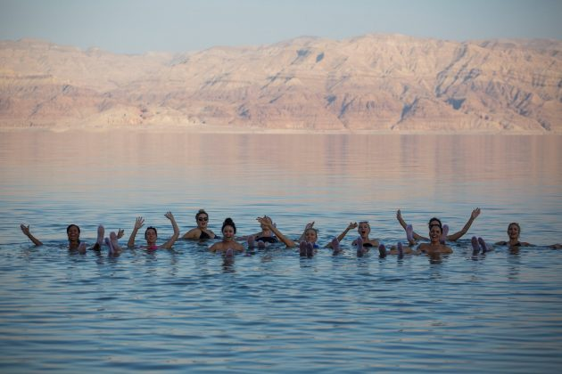

Nature’s way of proving that physics is cool is shown in a way of Dead Sea which is one such marvel. Known for its density because of the presence of salt in this sea, a person can easily float in the water without drowning. So, you don’t have to be a swimmer to enjoy the Dead Sea.

Source: wikipedia, Image: israel21c.org